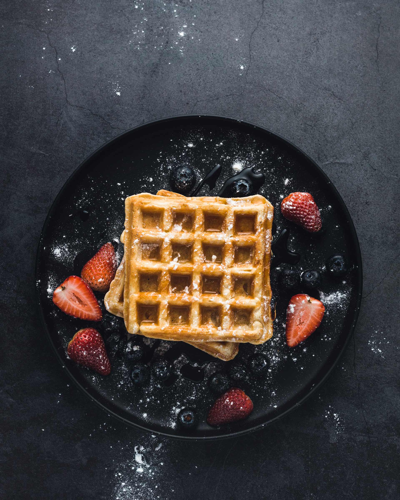

My Sweet RRRRecipes
Menu
French toasts Waffles PancakesEasy Waffles
Consider this your new, go-to waffle recipe when you want to start your day off on a sweet note.
No fussy steps or unexpected ingredients are required here, which means you can whip these up whenever your cravings hit.
-
Difficulty:
medium
-
Time:
30 minutes
-
Servings:
4 people
Ingredients
- 1 cup all-purpose flour, spooned and leveled
- 2 tablespoons sugar
- 1 teaspoon baking powder
- 1/4 teaspoon salt
- 1 cup milk
- 2 large eggs
- 4 tablespoons (1/2 stick) unsalted butter, melted
- Maple syrup and butter, as desired, for serving
Preparation
- Preheat waffle iron according to manufacturer's instructions. In a large bowl, whisk flour, sugar, baking powder, and salt; set aside.
- In a small bowl, whisk milk and eggs; pour over flour mixture, and whisk gently to combine (don't overmix). Gently whisk in butter.
- Following manufacturer's instructions, cook waffles until deep brown and crisp. (For a standard waffle iron, pour a generous 1/2 cup of batter into center, spreading to within 1/2 inch of edges, and close; waffle will cook in 2 to 3 minutes.) Serve warm, with maple syrup and butter, as desired.